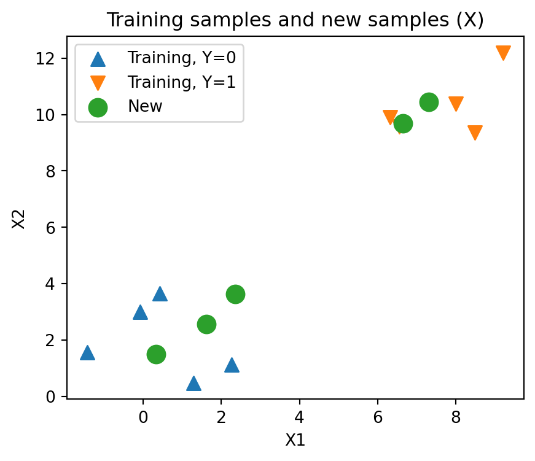
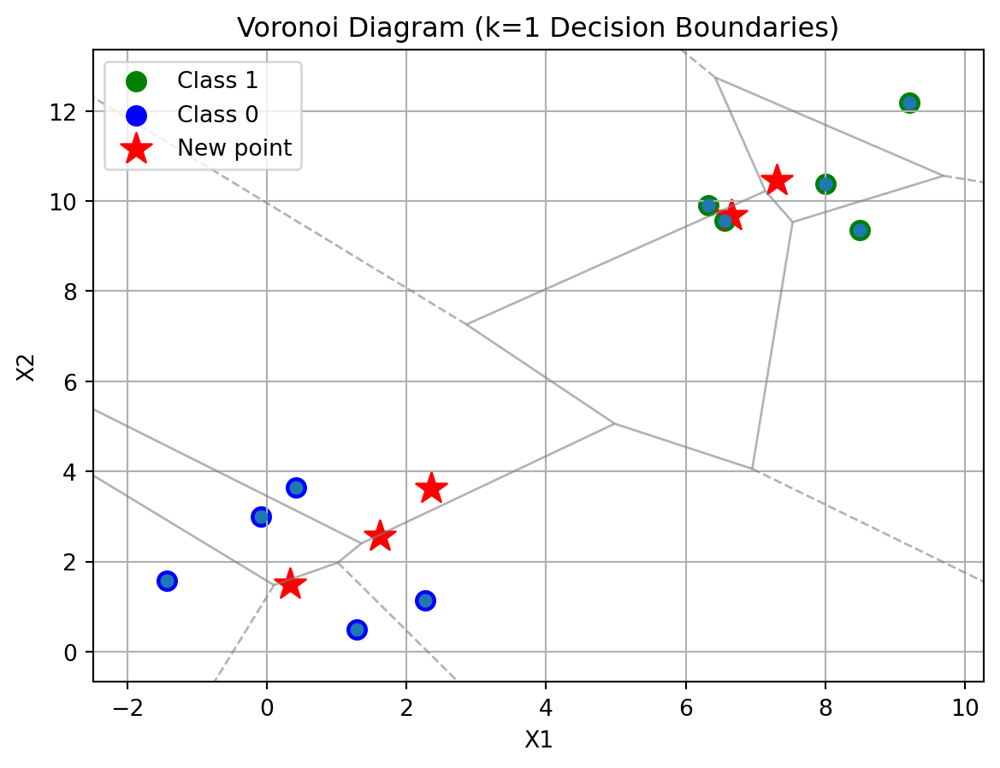
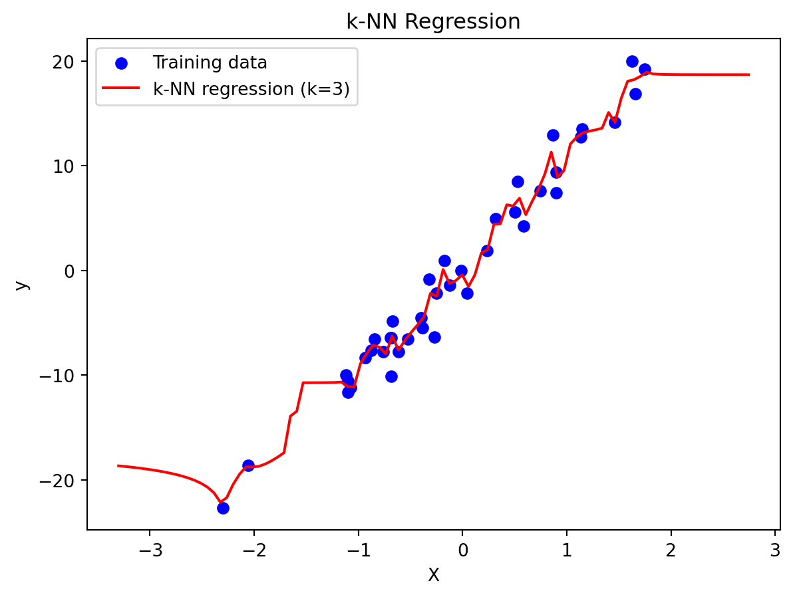

import numpy as np
import pandas as pd
import matplotlib.pyplot as plt12 k-Nearest Neighbors
This section introduces k-nearest neighbors (kNN), a distance-based algorithm used in data mining tasks such as classification and regression.
12.1 What is kNN?
kNN is a simple but powerful algorithm:
- As a non-parametric method that makes no assumptions about the data distribution.
- As a lazy learning algorithm because it does not build a model during training.
- Instead, prediction happens (the algorithm finds its
knearest neighbors from the training data) when a test sample is given.
- Instead, prediction happens (the algorithm finds its
For classification of new samples, kNN is based on the class labels of the k nearest neighbors. - A sample is assigned to the majority class among its k nearest neighbors.
- If k=1, the sample takes the class of its single nearest neighbor.
Also, for regression (known as kNN regression or nearest neighbor smoothing), kNN is based on the target values of the k nearest neighbors. - The prediction is the average of the values of the k nearest neighbors.
12.1.1 The Core kNN Algorithm
Prediction in kNN involves:
- Calculating the distance from the query point to all training examples.
- Sorting distances.
- Selecting the
knearest neighbors.
- Making a prediction1, using majority vote (classification) or averaging (regression).
12.1.2 Distance Metrics
To identify nearest neighbors, defining “closeness” of a sample to another requires a distance measure such as Euclidean distance , Manhattan distance (L1 norm), Minkowski distance, Hamming distance and Correlation-based measures ( sometimes used for specialized data, such as gene expression or time-series).
The choice of distance metric can significantly affect the accuracy of the kNN algorithm.
NoteThe Importance of Feature Scaling
Since kNN is based on distance calculations, its performance can be distorted if features are measured on different scales or in different units.
- Standardization (Z-score normalization): rescales features so they have mean 0 and standard deviation 1.
- Min–max scaling: rescales features to a fixed range, typically [0, 1].
Scaling ensures that all features contribute equally to distance calculations, preventing variables with larger numeric ranges from dominating the results.
12.2 kNN for classification
12.2.1 Packages
Let’s import general packages first.
12.2.2 Data
We can use sklearn.datasets.make_blobs() to generate a synthetic dataset with well-separated clusters. This is useful for demonstrating how k-NN works on simple 2D data.
Let’s first create a simple data set of the input features X_tr and the class labels Y_tr, which will be used for the training:
from sklearn.datasets import make_blobs
# Define the centers of the clusters (each corresponds to a class)
centers = [[ 1, 2 ], [ 7, 10 ]] # the center coordinates of each data class
# Generate training data
X_tr, y_tr = make_blobs(
n_samples=10, # number of data samples to generate
centers=np.array(centers), # cluster centers
random_state=123 # fixed seed to control the "random" creation for reproducibility
)
# Convert to a DataFrame for easier handling
df_tr = pd.DataFrame(X_tr, columns=['X1','X2'])
df_tr['Y'] = y_tr
df_tr| X1 | X2 | Y | |
|---|---|---|---|
| 0 | 9.205930 | 12.186786 | 1 |
| 1 | -0.085631 | 2.997345 | 0 |
| 2 | 0.421400 | 3.651437 | 0 |
| 3 | 6.321114 | 9.905291 | 1 |
| 4 | 1.282978 | 0.493705 | 0 |
| 5 | 8.491390 | 9.361098 | 1 |
| 6 | 6.556018 | 9.565649 | 1 |
| 7 | 2.265936 | 1.133260 | 0 |
| 8 | -1.426679 | 1.571087 | 0 |
| 9 | 8.004054 | 10.386186 | 1 |
We can also generate a separate set of samples to use as new (test) data with the input features X_new and the class labels Y_new. These samples will be classified later using the kNN algorithm trained on the earlier dataset.
# Generate new data (same cluster centers as training set)
X_new, y_new = make_blobs(
n_samples=5, # number of new data samples
centers=np.array(centers), # same cluster centers as training
random_state=456 # different seed for reproducibility
)
# Convert to DataFrame
df_new = pd.DataFrame(X_new, columns=['X1', 'X2'])
df_new['Y'] = y_new
df_new| X1 | X2 | Y | |
|---|---|---|---|
| 0 | 2.350509 | 3.629589 | 0 |
| 1 | 0.331871 | 1.501790 | 0 |
| 2 | 6.654189 | 9.684769 | 1 |
| 3 | 1.618576 | 2.568692 | 0 |
| 4 | 7.301966 | 10.449483 | 1 |
12.2.2.1 Visualizing the Training and New Data
Before applying kNN, it is helpful to visualize the datasets to see how the training and new samples are distributed in feature space.
# Create a figure and axis
fig, ax = plt.subplots(figsize=(5, 4))
# Training samples (circles), color by class label
scatter_tr = ax.scatter(
df_tr[df_tr['Y']==0]['X1'], df_tr[df_tr['Y']==0]['X2'],
s=70, marker='^', label='Training, Y=0'
)
scatter_tr = ax.scatter(
df_tr[df_tr['Y']==1]['X1'], df_tr[df_tr['Y']==1]['X2'],
s=70, marker='v', label='Training, Y=1'
)
# New samples (X markers), color by class label
scatter_new = ax.scatter(
df_new['X1'], df_new['X2'],
s=120, marker='o', label='New'
)
# Labels and title
ax.set_title("Training samples and new samples (X)")
ax.set_xlabel("X1")
ax.set_ylabel("X2")
ax.legend()
plt.show()
12.2.3 Implementation with Scikit-learn (sklearn)
Instead of manually coding kNN, you can use the KNeighborsClassifier available in scikit-learn.
The neighbors module in sklearn provides efficient implementations of nearest-neighbor algorithms and supports both NumPy arrays and SciPy sparse matrices as input.
12.2.3.1 Step 1: Instantiate the KNeighborsClassifier
from sklearn.neighbors import KNeighborsClassifier
# Instantiate with chosen parameters
knn = KNeighborsClassifier(
n_neighbors=5, # number of neighbors
metric='minkowski', # distance metric
p=2 # power parameter (p=2 → Euclidean, p=1 → Manhattan)
)This example consider some key parameters:
n_neighbors(int, default=5): The number of neighbors to consider for the classification vote.metric(str or callable, default=‘minkowski’): The distance metric used. Default ‘minkowski’ with p=2 is Euclidean.p(float, default=2): The power parameter for the Minkowski metric (1 for Manhattan, 2 for Euclidean).
If parameters are not explicitly set, the defaults are used (e.g., knn = KNeighborsClassifier()).
12.2.3.2 Step 2: Fit the Classifier to Training Data
# Train kNN classifier
knn.fit(X_tr, y_tr)KNeighborsClassifier()In a Jupyter environment, please rerun this cell to show the HTML representation or trust the notebook.
On GitHub, the HTML representation is unable to render, please try loading this page with nbviewer.org.
KNeighborsClassifier()
12.2.3.3 Step 3: Make Predictions on New Data
# Predict labels for new data samples
predicted_labels = knn.predict(X_new)
print("Predictions from the classifier:", predicted_labels)
print("True labels: ", y_new)Predictions from the classifier: [0 0 1 0 1]
True labels: [0 0 1 0 1]C:\Users\saaan\anaconda3\envs\buda_py311\Lib\site-packages\joblib\externals\loky\backend\context.py:136: UserWarning:
Could not find the number of physical cores for the following reason:
[WinError 2] The system cannot find the file specified
Returning the number of logical cores instead. You can silence this warning by setting LOKY_MAX_CPU_COUNT to the number of cores you want to use.
File "C:\Users\saaan\anaconda3\envs\buda_py311\Lib\site-packages\joblib\externals\loky\backend\context.py", line 257, in _count_physical_cores
cpu_info = subprocess.run(
^^^^^^^^^^^^^^^
File "C:\Users\saaan\anaconda3\envs\buda_py311\Lib\subprocess.py", line 548, in run
with Popen(*popenargs, **kwargs) as process:
^^^^^^^^^^^^^^^^^^^^^^^^^^^
File "C:\Users\saaan\anaconda3\envs\buda_py311\Lib\subprocess.py", line 1026, in __init__
self._execute_child(args, executable, preexec_fn, close_fds,
File "C:\Users\saaan\anaconda3\envs\buda_py311\Lib\subprocess.py", line 1538, in _execute_child
hp, ht, pid, tid = _winapi.CreateProcess(executable, args,
^^^^^^^^^^^^^^^^^^^^^^^^^^^^^^^^^^^^^^^12.2.4 Manual Procedure for Classification with kNN
To better understand how kNN works, let’s go through manual implementation of the classification steps with kNN.
12.2.4.1 Step 1: Calculate Distances
First, compute the distances between each training point in X_tr and each new point in X_new.
from sklearn.metrics import pairwise_distances
# Compute Euclidean distance between all training samples and the new point
distances = pairwise_distances(X_tr, X_new)
print( 'Matrix shape', distances.shape, '\n')
print( distances.round(3) )Matrix shape (10, 5)
[[10.965 13.889 3.574 12.251 2.577]
[ 2.517 1.553 9.495 1.757 10.493]
[ 1.929 2.152 8.675 1.614 9.672]
[ 7.426 10.319 0.399 8.714 1.122]
[ 3.313 1.386 10.645 2.102 11.634]
[ 8.4 11.329 1.865 9.663 1.612]
[ 7.275 10.187 0.154 8.564 1.157]
[ 2.498 1.969 9.612 1.575 10.59 ]
[ 4.302 1.76 11.451 3.204 12.451]
[ 8.81 11.739 1.521 10.094 0.705]]Here, the result is a matrix of shape (len(X_tr), len(X_new)), and its element at row i, column j is the distance between training sample i and new sample j.
12.2.4.2 Step 2: Identify Nearest Neighbors
For simplicity, let’s focus on the classification of the 4th new point in X_new (i.e., j = 3). We extract the column of distances corresponding to that new point:
j = 3 # index of the 4th new point
distances_j = distances[:, j]
distances_jarray([12.2505377 , 1.75728856, 1.61417649, 8.7143299 , 2.10195063,
9.66293669, 8.56362865, 1.57465629, 3.20449589, 10.09393606])Then, rank (sort) them based on the resulted distances, by using np.argsort() that returns the indexes:
# Sort indices by distance (ascending order)
indices_sorted_by_distance = np.argsort(distances_j)
indices_sorted_by_distancearray([7, 2, 1, 4, 8, 6, 3, 5, 9, 0])Given a predetermined neighbor size k (as a user parameter), define a set for the neighbors of the jth point in X_new by taking the top (i.e., closest to the jth example) k samples in X_tr:
# Get indices of the k closest samples
k = 3
neighbor_indices = indices_sorted_by_distance[:k]
neighbor_indicesarray([7, 2, 1])12.2.4.3 Step 3: Retrieve Neighbor Labels
Retrieve the class labels for the nearest neighbors.
neighbor_labels = y_tr[neighbor_indices]
neighbor_labelsarray([0, 0, 0])12.2.4.4 Step 4: Plurality vote
Finally, assign the class label of the new point by majority vote (mode) of its neighbors’ labels:
from collections import Counter
# Get the most frequent label (mode)
most_common = Counter(neighbor_labels).most_common(1)[0][0]
most_commonnp.int64(0)
NoteVoronoi Diagram
When (k = 1), the decision boundary of the kNN classifier corresponds to the borders of a Voronoi diagram. Each region in the diagram contains all samples that are closest to a particular training sample.
The visualization below shows how the training data divides the input space into such regions.
import matplotlib.pyplot as plt
from scipy.spatial import Voronoi, voronoi_plot_2d
# Create Voronoi diagram from training data
vor = Voronoi(X_tr)
# Plot the Voronoi diagram
fig = plt.figure(figsize=(6, 6))
voronoi_plot_2d(
vor,
show_vertices=False,
line_colors='gray',
line_width=1,
line_alpha=0.6,
point_size=10
)
# Overlay training samples with class-based colors
colors = ['blue', 'green', 'purple']
for i, point in enumerate(X_tr):
plt.scatter(
point[0], point[1],
color=colors[y_tr[i]],
s=70,
label=f'Class {y_tr[i]}' if f'Class {y_tr[i]}' not in plt.gca().get_legend_handles_labels()[1] else ""
)
# Plot new data samples
plt.scatter(
X_new[:, 0], X_new[:, 1],
c='red', marker='*', s=200,
label='New point'
)
# Labels and formatting
plt.xlabel('X1')
plt.ylabel('X2')
plt.title('Voronoi Diagram (k=1 Decision Boundaries)')
plt.legend()
plt.grid(True)
plt.show()<Figure size 576x576 with 0 Axes>
This plot visually demonstrates how kNN with k=1 partitions the input space:
- Each cell (region) is assigned to the class of the nearest training point.
- New data samples fall into one of these cells and are classified accordingly.
12.3 kNN for Regression
While kNN is often introduced as a classification algorithm, it can also be applied to regression tasks. In this case, instead of predicting a class label, the algorithm predicts a numerical value for a new data point.
Step 1-4. Select neighbors: Identify the
kclosest training samples to the query point, using a distance metric (e.g., Euclidean).
Step 5. Aggregate values: Take the average (or sometimes weighted average) of the target values of these neighbors.
Step 6. Prediction Assign this aggregated value as the prediction for the new point.
- For a new point \(\mathbf{x}_{new}\), the prediction is:
\[ \hat{y}(\mathbf{x}_{new}) = \frac{1}{k} \sum_{i \in \mathcal{N}_k(\mathbf{x}_{new})} y_i \]
where:
- \(\mathcal{N}_k(\mathbf{x})\) is the set of the
knearest neighbors of \(\mathbf{x}\).
- \(y_i\) is the target value of neighbor \(i\).
12.3.1 Example with Scikit-learn
from sklearn.datasets import make_regression
from sklearn.neighbors import KNeighborsRegressor
# Generate a simple regression dataset for training
X_train, y_train = make_regression(n_samples=40, n_features=1, noise=2, random_state=1)
X_test, y_test = make_regression(n_samples=20, n_features=1, noise=2, random_state=1)
# Fit k-NN regression model
knn_reg = KNeighborsRegressor(n_neighbors=3, weights='distance')
knn_reg.fit(X_train, y_train)
# Predict on a grid of values
X_test = np.linspace(X_train.min()-1, X_train.max()+1, 100).reshape(-1, 1)
y_pred = knn_reg.predict(X_test)
# Plot
fig, ax = plt.subplots()
ax.scatter(X_train, y_train, c='blue', label='Training data')
ax.plot(X_test, y_pred, c='red', label='k-NN regression (k=3)')
ax.set_title("k-NN Regression")
ax.set_xlabel("X")
ax.set_ylabel("y")
ax.legend()
plt.show()
12.4 Reading/Reference
- Chapter 12.1, 12.2 in Business Analytics: communicating with Numbers, 2nd ed. (Jaggia et al., 2023)
- Chapter 4.3 in Introduction to Data Mining, 2nd ed. (Tan et al., 2019)
Weights can be assigned to neighbors so that closer neighbors contribute more strongly, often using inverse distance weighting.↩︎